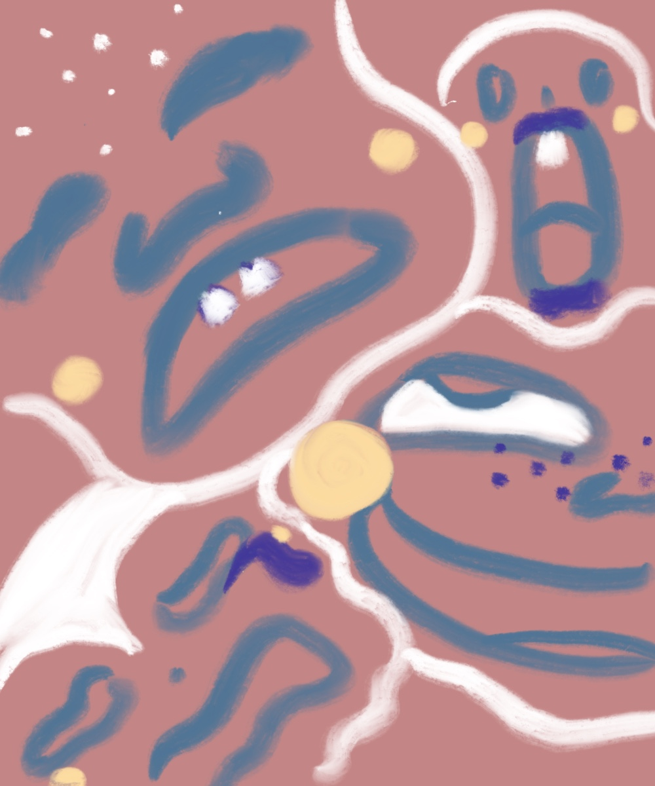

How does loneliness generate artistc creativities? After becoming seperated from social networking over a long time, Alice's initiations of overthinking showcased a potential of creative manifestation.
She realized that sometimes loneliness driven creativity can become dark.
